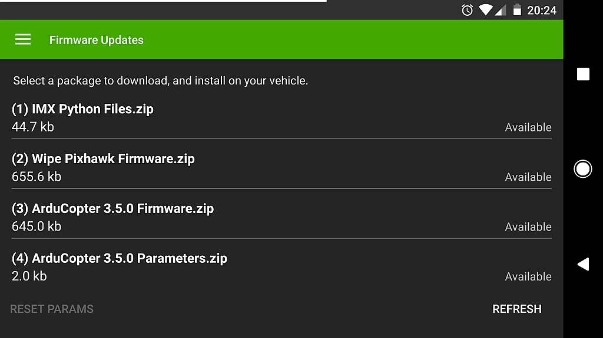
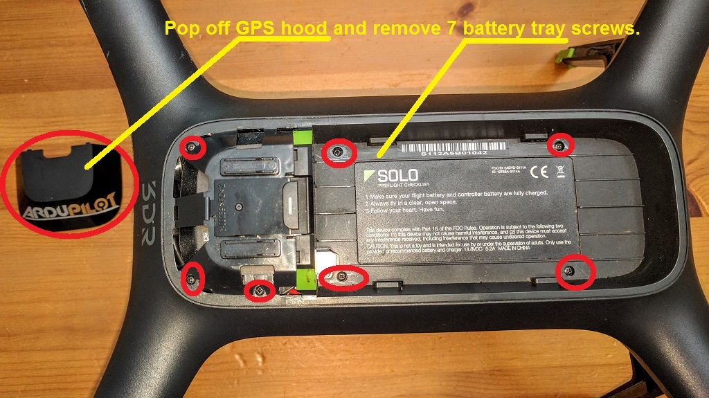
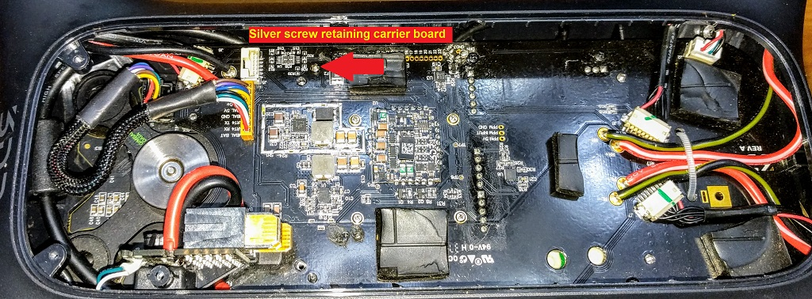
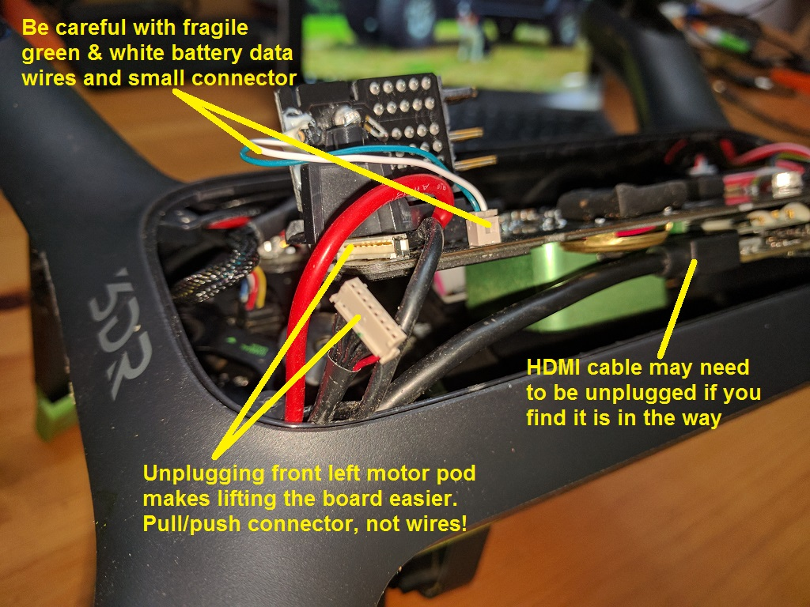
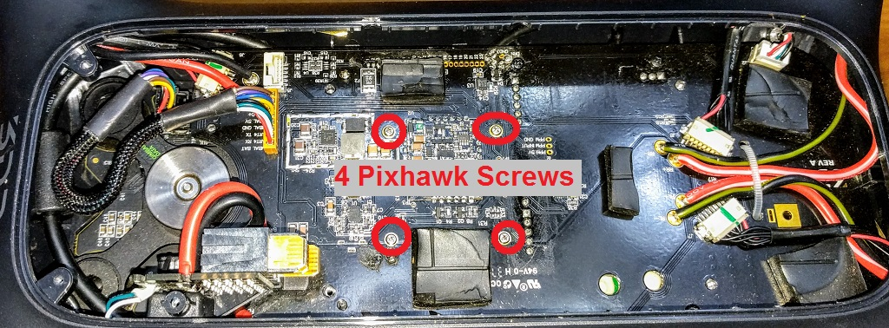
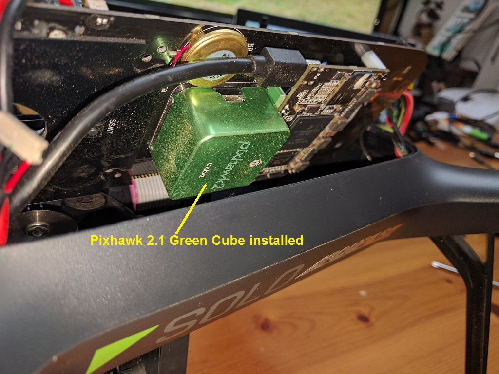
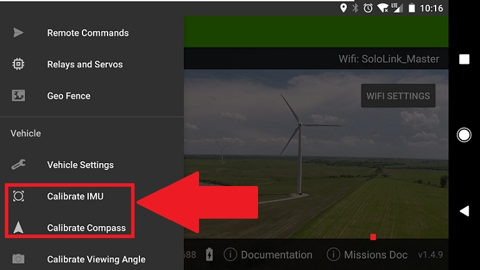

3DR Solo - Initial ArduCopter Install Using Solex¶
These are detailed instructions for the installation of ArduCopter on the 3DR Solo using the Solex app for Android. Your solo should be in safe working order before you start. It should not be malfunctioning or unreliable before you even begin. It must be up to date with the latest 3DR firmware. You cannot do this with a straight out of the box Solo. You must go through the full pre-flight update first on a new Solo. Once your Solo is up to date and working well, you’re ready to begin this process.
Note
If you need help troubleshooting a problem during with this process or have questions, the Solo Beta Test Facebook group is the best place to go.
1) Download required files to Solex: While your device has an internet connection, Go in the Solex menu all the way at the bottom, and select Firmware Updates. If you don’t see Firmware Updates in the main menu, go to the application settings and make sure advanced mode is enabled. Once you’re in Firmware Updates, hit the refresh button to see the latest files from the server. Tap each of the required packages to download them. The available status will change to downloaded for each one. As of this writing, the 4 required packages are:
IMX Python FilesWipe New Pixhawk Firmware.zipArduCopter 3.5.x Firmware.zipArduCopter 3.5.x Parameters.zipHERE Compass Parameters.ziponly if you have installed the HERE external GPS/Compass

2) Update python files: Before doing anything else, you must load the new python files onto the Solo’s IMX companion computer. Connect to the Solo with Solex. In the Solex Firmware Updates menu select the IMX Python Files.zip package. Read the notice and select install. All the files will be copied to the Solo in all the right places. When prompted, power cycle the Solo. The files are compiled on reboot. It is critical that this step take places before you install the Pixhawk 2.1 Green Cube in your solo!
3) Remove the battery tray: Remove the battery and pop off the GPS cover. Then unscrew all the small black screws around the battery tray. The battery tray can now be lifted up. Carefully unplug the GPS from the carrier board. Set the battery tray aside.

4) Lift up the carrier board: Locate the comparatively large silver screw on the right side toward the front. Unscrew that and set it aside with all the other screws.. The carrier board can now be lifted up very carefully. You will need to fidget with the wires from the motor pods a bit. Unplugging the front left motor pod from the carrier board can make this easier. The board will need to go up a bit, then shift back, then shift up the rest of the way. The left side can go up higher than the right, which is convenient. It’s kind of tight and generally annoying. Be careful not to break the small wires. Don’t break any of the other wires either. You will need to get the board high enough up to expose the Pixhawk mounted underneath it. It’s the black cube looking device.
 
5) Unscrew the stock Pixhawk: There are 4 very small screws on the top of the carrier board. Unscrew them and set them aside. The stock Pixhawk can now be removed. It will pull down off the carrier board. Set the stock Pixhawk aside somewhere safe. You will want to keep it.

6) Install the green cube: The green cube installs the same way the old one came off. Plug it into the carrier board from the bottom. Then put in the four screws.
Note
Do not reassemble yet: It is best to do the initial firmware install with the Solo still opened up. If anything goes wrong, it avoids having to disassemble it again.
7) Power up the Solo and reconnect to controller: Put the battery onto the solo. It will just sit atop the carrier board. Obviously you should avoid moving the Solo around too much at this point since the battery can just fall off. So get everything situated first. Turn on the battery. The solo will power up as usual. After a short while, the Solo will reconnect with the controller as usual. It will probably give you all kinds of warnings about calibration. This is normal and expected.
8) Reconnect your mobile device to Solo’s WiFi and make sure Solex says it is connected to vehicle.
9) Wipe The Pixhawk: In the Solex firmware updates menu, tap the Wipe New Pixhawk Firmware.zip package. Read the notice and select install. All the files will be copied to the Solo in all the right places. When prompted, power cycle the Solo. It will reboot, then switch into bootloader mode. Normally you will see disco lights while it’s doing this. But if the LED driver isn’t enabled, you may not. Don’t worry. It’s working. Give it 3-5 minutes to process. You may hear some clicks as the Pixhawk reboots. After 3-5 minutes, you will hear some tones signalling completion. It will come back to life, reconnecting with the controller and Solex.
10) Install ArduCopter: In the Solex firmware updates menu, tap the ArduCopter 3.5.x Firmware.zip package. Read the notice and select install. All the files will be copied to the Solo in all the right places. When prompted, power cycle the Solo. It will reboot, then switch into bootloader mode. Normally you will see disco lights while it’s doing this. But if the LED driver isn’t enabled, you may not. Don’t worry. It’s working. Give it 3-5 minutes to process. You may hear some clicks as the Pixhawk reboots. After 3-5 minutes, you will hear some tones signalling completion. It will come back to life, reconnecting with the controller and Solex.
Note
If the Solo doesn’t seem to complete the firmware installations after about 5 minutes, power off the Solo and power it back on. A few people have experienced this. It took a few power cycles to get it go through. It is unknown why this happens. But in those cases, power cycling 1-4 times got it to go.
11) Reset Parameters: In the Solex firmware updates menu, tap the Reset Params button. Read the notice and press yes. When prompted, power cycle the solo. (This step is redundant since the prior firmware wipe also reset the parameters. We’re doing this for good measure.)
12) Load Parameters: In the Solex firmware updates menu, tap the ArduCopter 3.5.x Parameters.zip package. Read the notice and select Install. The parameters will be written to the Solo’s Pixhawk. When prompted, power cycle the Solo. The solo will reboot and reconnect to the controller and apps. You will notice the LEDs now look like an aircraft rather than a car. Installation complete!
Note
If you have the HERE external compass installed, load the
HERE Compass Parameters.zipafter the ArduCopter parameters and before rebooting. If you have the stock leg compass, do not load the HERE compass package.
13) Reassemble the Solo: Once all of the above steps are completed successfully, you can reassemble the Solo. Make sure you don’t have any screws left over. Make sure all the wires, including the GPS and motor pods, are plugged back in. Be careful with the small green and white SMBUS wires going to the battery connector.
14) Connect and Check: Turn the Solo back on. Connect with any and all apps you plan to use (3DR, Solex, Side Pilot, etc) and test functionality. Run the turtle/rabbit sliders for speed and pan all the way to rabbit and back down all the way to turtle. These sliders make changes to the parameters. Running the sliders up and down ensure those parameters are set the way they should be. Go through all the settings. Touch everything to set and verify everything. Do not assume these settings stuck from before.
15) Calibrations: Once all of this done, you will need to do the 3D Accelerometer Calibration (aka Accel Cal, aka Level Calibration, AKA IMU Calibration) and the compass calibration. Solex v1.4.9 and higher has these calibrations in the menu. They work the same way they do in the 3DR Solo application. - Do the level calibration first on an actual level surface, such as a table. For each orientation, place Solo down gently, and let it settle for about 5 seconds before clicking through to the next one. It must remain perfectly still when you push the button, so hands off the aircraft! Once calibration is complete, you must reboot the Solo. - The compass calibration must be done outdoors in an open area, away from structures, vehicles, and other metal objects. This applies to any vehicle running any firmware, not just a Solo, and not just ArduCopter master. Once calibration is complete, you must reboot the Solo.

16) FLY! Once all of the above is complete, you are ready to fly!
Return to the main upgrade page for first flight details.